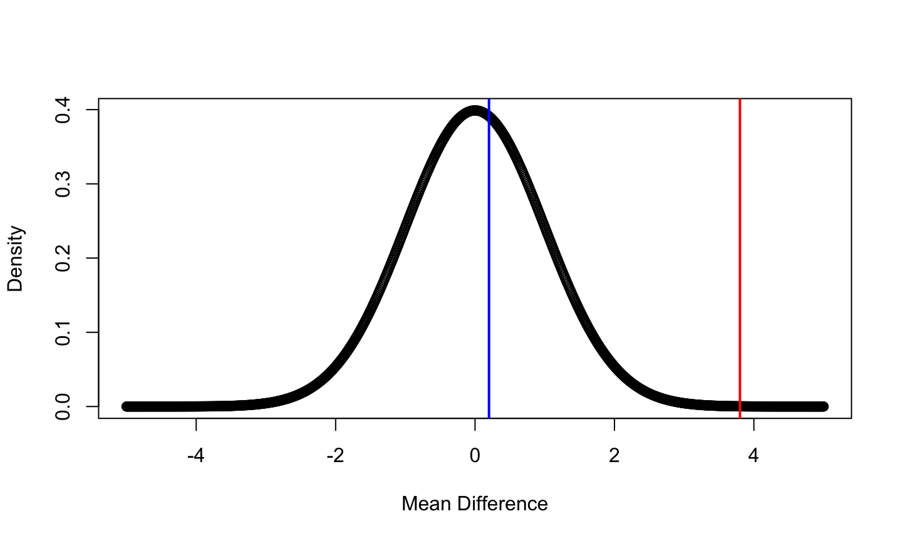
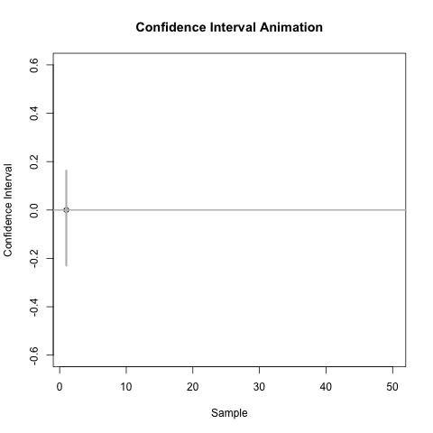
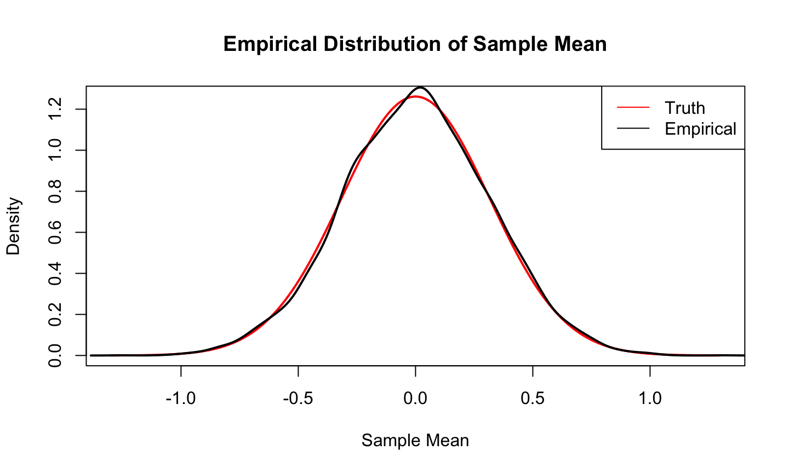
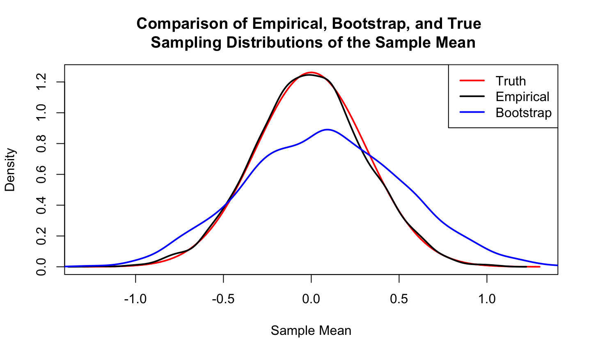

- Is there any evidence of global warming?
- Is the new grad significantly better than the existing?
- Is a new teaching technique better?
- Is a gene significantly associated with BMI?
6/3/2020
Statistical Hypothesis is a conjecture about a population parameter. This conjecture may or may not be true.
Null Hypothesis , \(H_0\) is a statistical hypothesis that states that there is no difference between a parameter and a specific value, or that there is no difference between two parameters.
Alternative Hypothesis, \(H_1\) is a statistical hypothesis that states the existence of a difference between a parameter and a specific value, or states that there is a difference between two parameters.
Assume that you want to test whether a drug reduces blood pressure. A sample of size 100 is collected.

Assume that you want to test whether a drug reduces blood pressure.
In notation
where \(\Delta\) is the BP before taking the medicine minus BP after taking the medicine.
Two-tailed test
Right-tailed test
Left-tailed test
\(H_0:\ \mu = 8.6,\quad H_1:\ \mu>8.6\) : Right-tailed
\(H_0:\ p =\frac{18}{1000} ,\quad H_1:\ p<\frac{18}{1000}\) : Left-tailed
\(H_0:\ \beta = 0,\quad H_1:\ \beta\neq 0\) : Two-tailed
After stating the hypotheses, the researcher designs the study.
Select the correct statistical test
Choose an appropriate level of significance
Formulate a plan for conducting the study
A statistical test uses the data obtained from a sample to make a decision about whether the null hypothesis should be rejected.
The numerical value obtained from a statistical test is called the test value or test statistic.
A test statistic is used to decide between \(H_0\) and \(H_a\).
It’s a function of the data (and possibly the parameters in the hypotheses) that measures the support of the data for the \(H_a\).
Assuming \(H_0\) is true (which is why it is called the null or default hypothesis), we determine the sampling distribution (at least approximately) of the test statistic.
We can assess what a typical test statistic would be if \(H_0\) is true, and what would be an unusual test statistic.
The distribution of the test statistic assuming \(H_0\) is true is called the null distribution.
qnorm or qt etc.The P-value (or probability value) is the probability of getting a sample statistic (such as the sample mean) or a more extreme sample statistic in the direction of the alternative hypothesis when the null hypothesis is true.
\[P(\text{Rejecting } H_0|H_0)\]
The P-value is the actual area under the standard normal distribution curve of the test value or a more extreme value (further in the tail).
The smaller the P-value, the stronger the evidence is against \(H_0\).
Suppose you have a left-tailed test and find the area in the tail to be 0.0489. What is the P-value? Would you reject this at \(\alpha\) = 0.05? \(\alpha\) = 0.01?
Suppose you have a two-tailed test and find the area in one tail to be 0.0084. What is the P-value? Would you reject this at α = 0.05? α = 0.01?
| p-value | Evidence |
|---|---|
| p-value > 0.10 | No evidence for \(H_a\) |
| 0.05 < p-value \(\leq\) 0.10 | Weak evidence for \(H_a\) |
| 0.01 < p-value \(\leq\) 0.05 | Moderate evidence for \(H_a\) |
| 0.001 < p-value \(\leq\) 0.01 | Strong evidence for \(H_a\) |
| p-value \(\leq\) 0.001 | Very strong evidence for \(H_a\) |
Power is the probability of rejecting the null hypothesis when, in fact, it is false.
Power is the probability of making a correct decision (to reject the null hypothesis) when the null hypothesis is false.
Power is the probability that a test of significance will pick up on an effect that is present.
Power is the probability that a test of significance will detect a deviation from the null hypothesis, should such a deviation exist.
Power is the probability of avoiding a Type II error.
\[P(\text{Rejecting }H_0|H_1)\]
A confidence interval provides us with plausible values of a target parameter.
A confidence interval has an associated confidence level.
The formulas for confidence intervals are usually derived from a pivotal quantity.
Suppose \(Y_1, Y_2, \dots , Y_n \sim N(\mu, 1)\) and i.i.d.
The random variable \[Z=\frac{\overline{Y}-\mu}{1/\sqrt{n}}\sim N(0,1)\] is a pivotal quantity.
Since \(P(-1.96\leq Z\leq 1.96) = 0.95\), we can derive that \[P\left(\overline{Y} - 1.96 \times \frac{1}{\sqrt{n}} \leq \mu \leq \overline{Y} + 1.96 \times \frac{1}{\sqrt{n}}\right)=0.95 \] Our 95% confidence interval for \(\mu\) (in this context) is \[\left[\overline{Y} - 1.96 \times \frac{1}{\sqrt{n}}, \overline{Y} + 1.96 \times \frac{1}{\sqrt{n}}\right].\]
If \(\overline{y} = 0.551\), then the associated 95% confidence interval for \(\mu\) when \(n=10\) is [-0.070,1.171].
Note: the confidence level is associated with the procedure, not a specific interval.
If we used the CI formula given above to produce 100 intervals from independent data sets, then about 95% of them would contain the true mean, but about 5% would not.

CIs are directly linked to hypothesis tests.
A 100(1-\(\alpha\))% two-sided confidence interval for target parameter \(\theta\) is linked with a hypothesis test of \(H_0:\theta=c\) versus \(H_a:\theta\neq c\) tested at level \(\alpha\).
Any point that lies within the \(100(1-\alpha)\)% confidence interval for \(\theta\) represents a value of \(c\) for which the associated null hypothesis would not be rejected at significance level \(\alpha\).
Any point outside of the confidence interval is a value of \(c\) for which the associated null hypothesis would be rejected.
Similar relationships hold for one-sided CIs and hypothesis tests.
Consider the 95% confidence interval for \(\mu\) we previously constructed [-0.070,1.171].
Consider a statistical test of \(H_0:\mu=c\) versus \(H_a:\mu\neq c\) using \(\alpha=0.05\).
For what values of \(c\) would we fail to reject \(H_0\)?
.
.
.
For what values of \(c\) would we reject \(H_0\)?
A CI provides us with much of the same information as a hypothesis test, but it doesn’t provide the p-value or allow us to do hypothesis tests at different significance levels.
Confidence regions are often preferred over hypothesis tests because they provide additional information in the form of plausible parameters values.
The conventional parametric confidence interval assumes we know the distribution of the population in order to find a pivotal quantity.
A bootstrap confidence interval can be constructed if the population distribution is unknown.
How would we estimate the sampling distribution of a statistic without statistical theory?
Estimating the Sampling Distribution of a statistic for a Known Population
Consider a comparison of the estimated sampling distribution (the empirical distribution) and the true sampling distribution of \(\overline{Y}\) when sampling \(n=10\) observations from a \(N(0,1)\) population.
Let, \(Y_1,\dots, Y_10\sim N(0,1)\), so, \(\overline{Y}\sim N(0, 1/n)\).

The bootstrap method allows us to approximate the sampling distribution of a statistic by using the observed data to produce simulated data sets.
The bootstrap method uses the observed data to approximate the shape, spread, and bias of the sampling distribution of a statistic.
A bootstrap sample is a sample with replacement of size n from the observed data.
Estimating the Sampling Distribution Using the Bootstrap Method
Consider a comparison of the bootstrap, empirical, and true sampling distributions of \(\overline{Y}\) when the data are obtained from a \(N(0,1)\) population.
set.seed(10)
x = seq(-1.3, 1.3, length.out = 10000)
Truth = dnorm(x, sd = 1/sqrt(10))
nsim = 4000
Empirical = sapply(1:nsim, function(x) mean(rnorm(10)))
y = rnorm(10)
boot_ybar = sapply(1:nsim, function(x) mean(sample(y, replace = T)))
plot(x,Truth,col='red',type = 'l', lwd = 2,
xlab = 'Sample Mean', ylab = 'Density',
main = 'Comparison of Empirical, Bootstrap, and True \n Sampling Distributions of the Sample Mean')
lines(density(Empirical), lwd = 2)
lines(density(boot_ybar),lwd = 2, col='blue')
legend('topright',legend = c('Truth','Empirical','Bootstrap'),
col = c('red','black','blue'), lty = 1,lwd = 2)

A 100(1-\(\alpha\))% confidence interval for a target parameter \(\theta\) can be obtained by determining the \(\alpha\)/2 and 1-\(\alpha\)/2 quantiles of the bootstrap distribution for \(\hat{\theta}\). E.g., a 95% CI for a population mean \(\mu\) could be obtained by taking the 0.025 and 0.975 quantiles of the bootstrap distribution for \(\overline{Y}\).
Example (continued): Continuing our previous example, the 95% bootstrap confidence interval for \(\mu\) is.
quantile(boot_ybar, prob = c(0.025, 0.975))
## 2.5% 97.5% ## -0.7689507 0.9525203
The parametric 95% confidence interval is [-0.070,1.171].
The parametric and bootstrap methods of constructing confidence intervals will NOT produce identical intervals, though the intervals should be similar if the distributional assumptions are satisfied.
If you are unsure whether the distributional assumptions are satisfied, you should use the bootstrap method to construct your confidence interval.
Grogan and Wirth (1981) provide data on the wing length in millimeters of nine members of a species of midge (small, two-winged flies). From these nine measurements, we wish to make inference about the population mean \(\mu\). Assume that the data are an i.i.d. sample from a \(N(\mu,\sigma^2)\) population with \(\mu\) and \(\sigma^2\) unknown.
The data are: 1.64, 1.70, 1.72, 1.74, 1.82, 1.82, 1.82, 1.90, 2.08
dat = c(1.64, 1.70, 1.72, 1.74, 1.82, 1.82, 1.82, 1.90, 2.08)
ybar = mean(dat)
s = sd(dat)
er = qt(0.99, df = length(dat)-1) * s/sqrt(length(dat))
print(paste0('98% parametric CI is [', round(ybar - er,3), ', ', round(ybar +er,3),']'))
## [1] "98% parametric CI is [1.679, 1.93]"
boot_ybar = sapply(1:4000, function(x) mean(sample(dat, replace = T)))
print(paste0('98% bootstrap CI is [',round(quantile(boot_ybar, probs = 0.025),3),', ',
round(quantile(boot_ybar, probs = 0.975),3),']'))
## [1] "98% bootstrap CI is [1.731, 1.887]"
ttest = (ybar - 2)/(s/sqrt(length(dat)))
print(paste0('t-test statistics: ', round(ttest,3)))
## [1] "t-test statistics: -4.516"
print(paste0('p-value:', round(1-pt(ttest,df = length(dat)-1) ,3)))
## [1] "p-value:0.999"